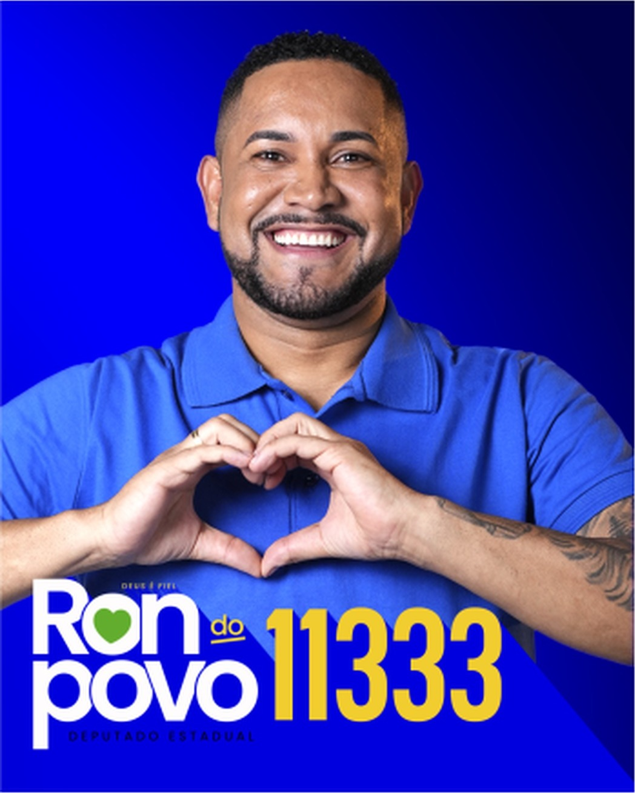

A Bahia vai vencer
Canal oficial no WhatsApp. Como o site não solicita dados pessoais nesta etapa, não há consentimento específico a marcar, conforme a LGPD (Lei nº 13.709/2018). Segundo a Meta, seguir o canal não revela seu número.

De vendedor ambulante e mototaxista a vereador 2x eleito e futuro Deputado Estadual da Bahia.
A Bahia com a Força de Ron do Povo
Aumente o som e cante junto o jingle oficial da vitória!
Centro de Cuidado e Tratamento da Dor Crônica
Uma das principais bandeiras de Ron do Povo 11333 na Assembleia Legislativa: a criação de centros públicos especializados com atendimento humanizado, fisioterapia contínua, reabilitação física e acesso facilitado a terapias para milhares de cidadãos que convivem diariamente com dores crônicas incapacitantes.
Médicos, fisioterapeutas, psicólogos e terapeutas focados na qualidade de vida.
Desburocratização de remédios e procedimentos especializados pelo SUS.
Acolhimento com respeito e escuta ativa para quem mais sofre.
Quem é Ron do Povo?
Ronaldo Almeida Caribé — Nascido em Feira de Santana, Bahia, em 24 de janeiro de 1986.
Ronaldo Almeida Caribé, popularmente conhecido como Ron do Povo, nasceu e cresceu em Feira de Santana. De origem humilde, começou a trabalhar muito jovem para contribuir com o sustento da família.
Trabalho honesto desde a base:
Foi vendedor ambulante nas feiras e ruas da cidade e trabalhou como mototaxista, vivenciando na prática as lutas, as dificuldades de transporte e as necessidades reais da população trabalhadora.
Empreendedor no setor de alimentação, Ron transformou a sua relação diária com a comunidade em vocação pública. Casado com Chirlaine Venas e pai exemplar, ingressou na política para ser a voz de quem não tem vez.
Foi eleito vereador de Feira de Santana em 2016 e reeleito em 2020 com expressiva votação popular, destacando-se pela atuação nas comunidades, fiscalização da saúde pública e defesa dos trabalhadores autônomos.
Origem & Suor
Trabalhou como vendedor ambulante e mototaxista, conhecendo cada bairro e cada dificuldade da gente humilde.
Comércio & Emprego
Comerciante de alimentos, entende a importância de apoiar os microempreendedores e feirantes que sustentam famílias.
Vereador 2x Eleito
Eleito em 2016 e reeleito em 2020 na 2ª maior cidade da Bahia, com trabalho presente e fiscalização diária.
Fé em Deus & Família
Casado com Chirlaine Venas, cristão convicto de que Deus é fiel para abrir portas e abençoar a nossa caminhada.
Compromissos pela Bahia
Propostas reais e pés no chão para melhorar a vida do trabalhador baiano.
Saúde Humanizada & Dor Crônica
Criação de centros especializados no tratamento da dor crônica, fortalecimento das UPAs, redução das filas de regulação e garantia de remédios nos postos.
Infraestrutura nos Bairros
Pavimentação asfáltica, iluminação pública de LED, saneamento básico e drenagem nas periferias e distritos esquecidos.
Valorização dos Autônomos
Projetos de incentivo fiscal, linhas de microcrédito e dignidade para mototaxistas, motoristas por aplicativo, feirantes e ambulantes.
Esporte & Cidadania Jovem
Reforma de campos de várzea, construção de praças esportivas e apoio a escolinhas comunitárias para tirar jovens da vulnerabilidade.
Educação & Cursos Técnicos
Expansão do ensino profissionalizante integrado e transporte escolar digno para os estudantes dos distritos e zona rural.
Segurança & Iluminação
Integração das forças de segurança, rondas comunitárias nos bairros e videomonitoramento inteligente para proteção do cidadão.
Faça sua foto oficial com a moldura 11333
Mostre o seu apoio a Ron do Povo! Carregue sua foto favorita, veja o resultado em tempo real com a moldura oficial e baixe sua foto personalizada para colocar no WhatsApp, Instagram e Facebook!
🔒 Suas fotos são processadas no seu próprio navegador e não são salvas em servidores.
Baixe os Materiais da Campanha
Compartilhe com a sua família, amigos e vizinhos a força de Ron do Povo 11333.
Jingle Oficial MP3
Música oficial da campanha para tocar no paredão, carro de som e reuniões.
Baixar Áudio MP3 ↓Santinho Digital 11333
Arte digital compacta otimizada para envio rápido no WhatsApp e redes sociais.
Baixar Santinho ↓{kind=link}
Moldura de Foto PNG
Moldura oficial transparente de alta resolução para montagens e fotos de perfil.
Baixar Moldura ↓{kind=link}
Figurinhas de WhatsApp
Pacote oficial de figurinhas (stickers) divertidas e de apoio para o seu WhatsApp.
Pedir no Zap →Agenda de Visitas e Reuniões
Acompanhe onde Ron do Povo 11333 estará ouvindo a população.
Caminhada nos Bairros de Feira de Santana
Visita aos comerciantes, ambulantes e feirantes com diálogo aberto sobre demandas locais.
📍 Feira de Santana — BahiaPlenária Popular de Saúde & Dor Crônica
Reunião com lideranças comunitárias e profissionais da saúde para debater o Centro de Tratamento da Dor.
📍 Região Metropolitana & DistritosLive Oficial no Instagram & Facebook
Transmissão ao vivo para prestação de contas, apresentação de propostas e resposta às perguntas do povo.
🌐 Transmissão OnlineVenha fazer parte da caminhada da vitória!
Cadastre-se como voluntário, receba materiais na sua casa e ajude a multiplicar a mensagem de Ron do Povo 11333 em toda a Bahia.
O que precisa melhorar na sua cidade?
Conte para Ron do Povo as pendências, buracos, falta de postos, iluminação ou melhorias para o seu bairro. Vamos cobrar e lutar por você!
A sua voz tem força e vai virar projeto e cobrança!
"Nosso trabalho sempre nasceu no chão da rua, conversando com feirantes, mototaxistas e trabalhadores. Nenhum político resolve nada fechado em gabinete com ar-condicionado. Diga o que precisa melhorar na sua rua ou distrito que vamos fiscalizar e buscar soluções na Assembleia Legislativa!"